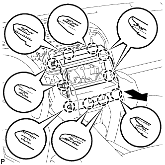
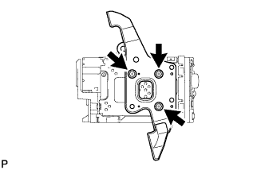
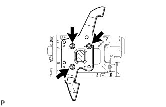
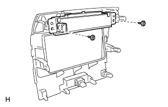
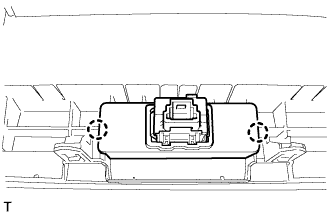

RADIO RECEIVER (w/ Cassette Tape Player) > REMOVAL |
| 1. DISCONNECT CABLE FROM NEGATIVE BATTERY TERMINAL |
| 2. REMOVE NO. 1 SPEAKER OPENING COVER ASSEMBLY |
 |
Detach the 8 claws and remove the opening cover.
| 3. REMOVE NO. 3 INSTRUMENT PANEL REGISTER ASSEMBLY |
 |
Place protective tape as shown in the illustration.
Using a moulding remover, detach the 6 claws.
Remove the register and then disconnect the connector.
| 4. REMOVE NO. 4 INSTRUMENT PANEL REGISTER ASSEMBLY |
 |
Place protective tape as shown in the illustration.
Using a moulding remover, detach the 6 claws.
Remove the register and then disconnect the connector.
| 5. REMOVE NO. 1 INSTRUMENT CLUSTER FINISH PANEL CENTER |
 |
Detach the 10 claws on the backside of the cluster finish panel to remove it.
| 6. REMOVE RADIO RECEIVER ASSEMBLY WITH BRACKET |
 |
Remove the 2 screws and 2 bolts.
Disconnect the connectors and remove the radio receiver.
| 7. REMOVE NO. 1 RADIO BRACKET |
 |
Remove the 3 bolts and bracket.
| 8. REMOVE NO. 2 RADIO BRACKET |
 |
Remove the 3 bolts and bracket.
| 9. REMOVE CLOCK ASSEMBLY |
 |
Remove the 2 screws and clock.
| 10. REMOVE HAZARD WARNING SIGNAL SWITCH ASSEMBLY |
 |
Detach the 2 claws and remove the hazard warning switch.